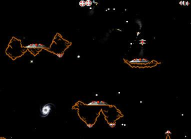

Game addiction
Back in 1990, the Green project was just getting started. This is where Java originated. Also in 1990 an arcade-style 2D game called OIDS was released on the Apple Macintosh. I developed a real addiction to it and spent many hours going back and forth between writing the java (then oak) compiler/VM and playing oids. There's something deeply fascinating about gameplaying that unlocks mental logjams. I'm sure that there are many PhD thesis topics here. Needless to say, I was thrilled to find that a new release of oids came out for OS X just recently. It's no great visual experience compared to the mega 3D virtual universes of today. But just like in the movies, a compelling experience isn't defined just by its special effects.I've never really been sucked into the mega 3D games (well, except for Commache: a helicopter warfare simulation game). All the first-person shooters in the Doom tradition never did it for me. Lots of the folks around me got sucked in, but I never felt the pull. Humans are wierd.
| November 14, 2003 |